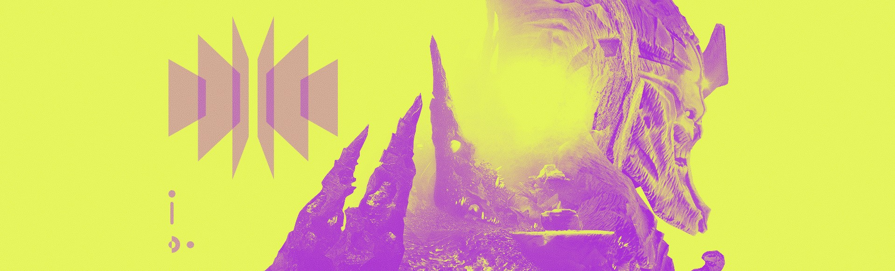

In the beginning, there were five.
Yul, the Honest Worm. Akka, the Worm of Secrets. Eir, the Keeper of Order. Ur, the Ever-Hunger. Xol, Will of the Thousands. And they were Virtuous.
In time, Yul spoke truth and bargained well. Its children escaped the Fundament and spread throughout the worlds. They followed the words of the Deep and brought low many agents of the Sky. They took, and a portion of all they took was returned to the Virtuous.
They grew strong.
In time, Auryx learned Akka’s secret. That he was stronger than the gods. That they had given their power, and in giving, it was diminished. Auryx rose up and slew Akka. He took, and he grew strong with Akka’s power.
After the five became four, Yul spoke.
Behold my majesty. Behold my crushing might, my staggering size, my scales that shine with an oppressive gleam.
Behold my wings, which create winds that sweep through the stars.
Together, we have called life to Fundament, and made that life thrive. Protected it from extinction. They are our hosts, and we are their strength.
But we do not give. We take. For this is the struggle to exist. We are not immune. The weakest of us must give way to the stronger.
And Xol felt [fear|cunning], for it knew that Yul would in time turn its teeth to Xol.
But Akka was not the only one with a secret. Xol had a pact with a forgotten child, abandoned by its father.
The cursed one took a fraction of Xol’s power, and in return, Xol took the heart from the child, whose name had been struck from the World’s Grave. The orphan called life out of death, and fed that power to Xol.
Together, they would find a new world to rule.
And the five became three.
I, the child become [herald|death], record these words. They are not of the Sorrow. They are mine.